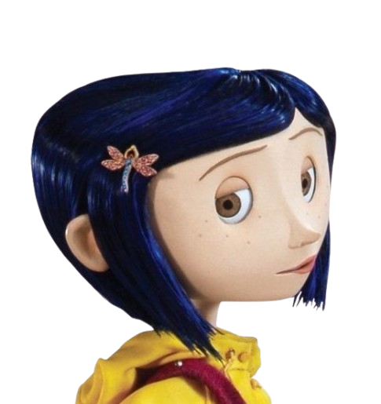

Coraline — Coraline y la puerta secreta
Coraline es una niña curiosa, aventurera e independiente que busca emoción y atención en su vida. Es valiente, observadora y perseverante, aunque a veces puede ser impaciente y rebelde. A pesar de sentir curiosidad por lo desconocido, demuestra inteligencia y determinación al enfrentarse a situaciones peligrosas para proteger a su familia.